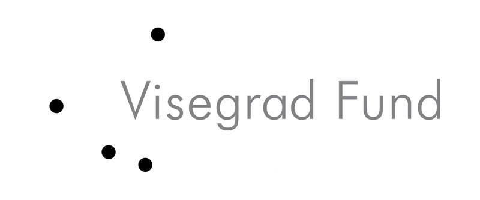

Kalidor — гэта медыяпрастора выхаду з культурнай самаізаляцыі.
Мы крытычна ацэньваем культурныя з'явы і сацыяльныя працэсы. Нашая мэта – свабодна думаць і пераасэнсоўваць тыя коды, якія задае грамадства і палітычны рэжым, царква і традыцыя, эканамічная сістэма і масавая культура.
У імкненні выйсці па-за межы лакальнага кантэксту мы цікавімся сацыякультурнай сітуацыяй іншых краінаў Усходняй Еўропы. Нам хочацца паглядзець на рэчы з сярэдзіны: пры дапамозе перакладаў тэкстаў блізкіх нам выданняў, а таксама праз самастойную праекцыю досведу суседзяў на беларускую сітуацыю.
Kalidor адкрыты для працы з новымі аўтарамі.
Мы шануем шчырасць, прафесіяналізм, аўтарскі стыль і перакананасць. Дасылайце лісты з ідэямі і прыкладамі працаў на we@kalidor.net.
Нас падтрымлівае:

Партнёры:
A2 Magazine / VLNA Magazine / Fundacja Pogranicze / Беларускі Калегіюм / Znyata / Tut.by / RecyklingIdei / Respublica